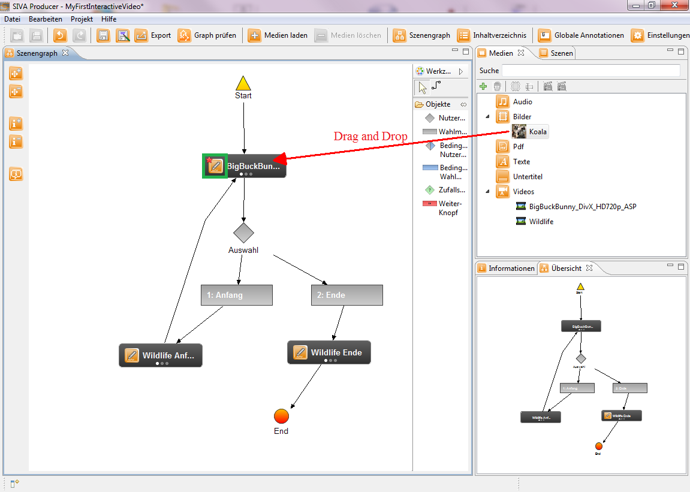

Hinzufügen von Szenenannotationen
Der Szenengraph Ihres ersten interaktiven Videos mit SIVA ist soweit fertig. Nun können Sie den Szenen noch Annotationen hinzufügen.
Nachfolgende Medienarten können dafür ausgewählt werden:
- Video
- Audio
- Bild
- Text
- Richtext
Zu diesem Zweck haben Sie bereits ein Bild in das Medienrepository geladen. Dies wird nun als Annotation zu einer Szene hinzugefügt.
Dazu ziehen Sie per Drag and Drop das Bild in eine Szene, in die sie eingefügt werden soll. Es erscheint in dem Szenesymbol ein kleiner roter Stern, der anzeigt, dass dieser Szene eine Annotation hinzugefügt wurde. Im nachstehenden Bild wurde dies anhand eines grünen Rahmens gekennzeichnet.

Damit Sie die Annotation bearbeiten können, klicken Sie bitte auf den Button mit dem Stift und es öffnet sich der Annotationseditor.
Eine Annotation besteht immer aus einem Inhalt, einer Dauer und einem Namen. Je nach Art der Annotation kann der Inhalt im Programm verändert werden. Der Name der Annotation kann durch den Benutzer angegeben werden. Wird kein Name eingegeben, wird dieser automatisch vom Programm vergeben. Bei jeder Annotation müssen Start- und Endzeitpunkt festgelegt werden.
Dies kann auf verschiedene Arten erfolgen:
- Eingabe von Start- und Endzeit in die entsprechenden Felder
- Verschieben des Start- und Endzeitpunktes auf der Zeitleiste
- Festlegen durch Klicks auf die Zeitleiste: Zum Festlegen des Startzeitpunktes wird der Mauszeiger auf dem gewünschten Zeitpunkt auf der Zeitleiste positioniert und mit der linken Maustaste geklickt. Das Festlegen des Endzeitpunktes wird auf die gleiche Art und Weise durchgeführt, nur wird hier mit der rechten Maustaste geklickt.
Sind alle Einstellungen vorgenommen, wird die Annotation durch einen Klick auf den Speichern-Button gespeichert. Dann wird die Annotation im Zeitleistenbereich des oberen Fensters angezeigt.
Nun ist unser Szenengraph fertig. Im nächsten Kapitel wird Ihnen noch gezeigt, wie Sie das interaktive Video speichern und exportieren.
Klicken Sie bitte hierzu auf den nächsten Menüpunkt "Speichern und Exportieren des interaktiven Videoprojektes" im Hilfeverzeichnis auf der linken Seite oder auf nachstehenden Link.
Speichern und Exportieren des interaktiven Videoprojektes